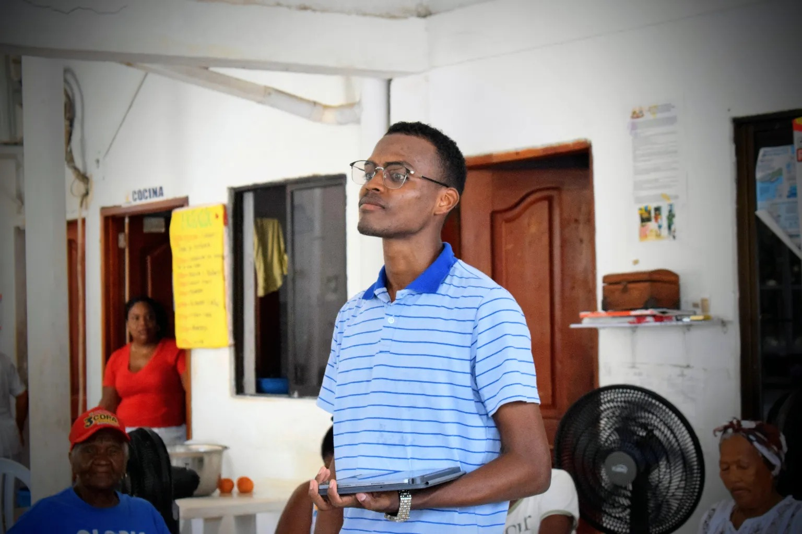
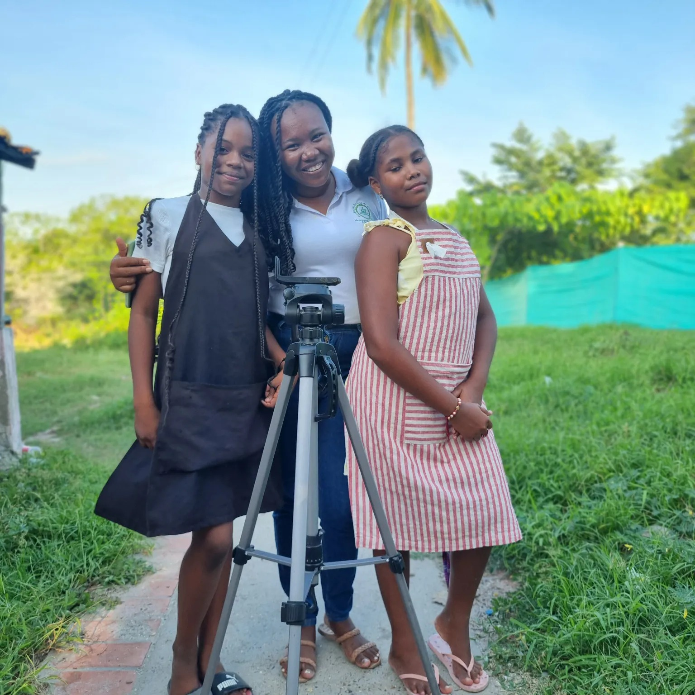

Comunicación
Comunicación comunitaria
Fortalecemos la expresión, la participación, la creación audiovisual y la memoria e identidad territorial.
Impulsamos oportunidades para nuestra gente a través de la comunicación, la inclusión digital y la creación audiovisual.
● Bocachica · Cartagena de Indias, Colombia
Somos una organización privada sin ánimo de lucro, constituida el 27 de febrero de 2026 en Bocachica, zona insular de Cartagena de Indias.
Reconocemos a las comunidades como protagonistas de sus propios procesos de transformación.
Conoce nuestra identidad →Conectamos el conocimiento, la cultura y la creatividad con las oportunidades de nuestras comunidades.
Fortalecemos la expresión, la participación, la creación audiovisual y la memoria e identidad territorial.
Promovemos la inclusión digital, la formación tecnológica y la innovación comunitaria.

Tecnología para nuestra gente.
Acercamos la tecnología a las comunidades para fortalecer sus capacidades digitales y su autonomía.
Primeras experiencias comunitarias.
Conocer el programa →
Creando historias, descubriendo capacidades.
Una propuesta para que los adolescentes descubran sus capacidades, cuenten sus historias y fortalezcan su identidad a través del cine.
En preparación.
Conocer el programa →Una propuesta de comunicación digital para informar, conectar y visibilizar las realidades, historias, capacidades y expresiones culturales de los territorios insulares.
Un medio de la Corporación Insular Digital, con independencia editorial y participación comunitaria.
Actualmente en preparación para su lanzamiento.
Conoce más sobre INSUDesde Bocachica, compartimos nuestras primeras experiencias comunitarias.
Experiencias iniciales de articulación y acercamiento a la tecnología con adultos mayores de Bocachica.
Antecedentes de comunicación local y construcción de propuestas para visibilizar las historias y expresiones del territorio.
Ofrecemos soluciones de comunicación y tecnología que contribuyen a sostener nuestro propósito social. Consulta disponibilidad.
Fotografía, video y contenidos audiovisuales.
Piezas gráficas y contenidos institucionales.
Presencia web y herramientas digitales básicas.
Talleres de comunicación y tecnología.
Conoce cómo aportar mediante alianzas, cooperación, donaciones y voluntariado.